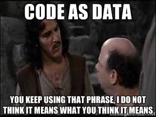
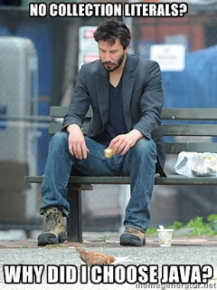

Clojure is Homoiconic, Java is Not
Introduction
Recently I was reading this article regarding what is (or was) new in Java 8 and took an interest in the following section on Lambdas:
Lambda Expressions, a new language feature, has been introduced in this release. They enable you to treat functionality as a method argument, or code as data. Lambda expressions let you express instances of single-method interfaces (referred to as functional interfaces) more compactly.
I did a quick Google search on "java lambdas" and this tutorial was the first hit. Once again, the same type of statement is made:
One issue with anonymous classes is that if the implementation of your anonymous class is very simple, such as an interface that contains only one method, then the syntax of anonymous classes may seem unwieldy and unclear. In these cases, you're usually trying to pass functionality as an argument to another method, such as what action should be taken when someone clicks a button. Lambda expressions enable you to do this, to treat functionality as method argument, or code as data.
The thing that struck me about these articles is the consistent statement that that Java Lambdas (a.k.a. anonymous instances of single method interfaces) are "code as data" because the function can be passed as an argument. I guess if you define data as "instances of classes or functions" then this description is fine, but when I read these articles this is what comes to mind:

Technically, the ability to assign a function to a variable or pass a function as an argument to another function means that your functions are "first class" which is a good thing. However, I would not call this "code as data." Another related term is "higher order functions." These are functions that take functions as their arguments or return functions as their results. Again, this is a very powerful language feature that Java now sort of does, but this is not "code as data."
What do I think of when I think of "code as data?" I think of "Homoiconicity." Google seems to agree, since when I type "code as data" into a search box the first thing that comes up is this Wikipedia article on Homoiconicity. Let's explore the concept in more detail.
##What is Homoiconicity? Often homoiconicity is defined one the following ways:
- The code is written in the data structures of the language.
- Code as data.
Those more familiar with the concept seem to use "Code as data" more, but I think the first definition is a bit more clear if you are getting started with the idea. Either way, I am going to illustrate the concept by showing how Clojure code is actually written as Clojure data structures. To contrast, I'll also show what "homoiconic Java" would look like. Finally, I'll show you a simple Clojure macro in which we rearrange our code/data.
###Homoiconic Clojure To start, consider the following core Clojure data structures:
()is an empty List.{}is an empty Map.[]is an empty Vector.#{}is an empty Set.
When we write code in Clojure, it is expressed in terms of the above data structures. Here is a very simple example that applies the str function (it's kind of like .toString) to the number 42:
user=> (str 42)
"42"
You might look at this and think this is the same as the following Java code:
public static String str(Integer i){
return i.toString();
}
str(42);
The only difference is the location of the parenthesis, right? Wrong! (str 42) not actually the function str with the argument of 42, but is a list containing two elements, the str symbol and the value 42. When the Clojure evaluator sees a list it attempts to resolve the first symbol (str in this case) and calls that function with the remaining elements of the list as arguments. While this may seem like splitting hairs at the moment, this is very important when you get to macros. It is also crucial to the point that Clojure code is data.
Here's another one:
(defn add [a b](+ a b))
Again, you might think this is the same thing as this Java function:
public static int add(int a, int b){
return a + b;
}
As before, they are not the same. The above Clojure add function is actually built up with two lists (one nested) and a vector of arguments. The inner list contains three symbols (+, a, and b) and the outer list contains the defn symbol, a symbol naming your function ("add"), a vector of arguments, and our inner list.
Here's another example:
(merge-with + { :x 1 :y 2 :z 3 } { :x 9 :y 2 :z 4 })
By this point you should see that we have a list, two maps, and a bunch of symbols and values as opposed to a function that adds two maps. Yes, the evaluator will merge the maps, but the code itself is data (as in the native data structures of the language).
You can do this type of structural breakdown with any Clojure code. Clojure programs are literal data structures consisting of nested literal data structures, values, and symbols. For more details, read this. The key takeaway is that we are indeed writing our code as a bunch of data (literal data structures containing nested data structures, values, and symbols).
###Homoiconic Java What if you wanted to write Java in its own data structures?
Here are our Java collection interfaces that correspond to the Clojure ones above:
- java.util.List
- java.util.Map
- java.util.Vector
- java.util.Set
Java, for some inexplicable reason, does not yet have collection literals, so this will be a very verbose exercise. My apologies up front.

Ok, now let's write some Java code in the data structures of the language:
List add = new LinkedList();
add.add("+");
add.add(1);
add.add(1);
Sadly, I have no way to evaluate this code, but, hey, it's data. I chose to use a String to represent the + operation because Java doesn't have symbols, either.
Here's another attempt at how I might construct some code as data in Java. I realize that this will be an utter failure, but you're just going to have to follow along as I write a ton of code to make my point.
Map a = new HashMap();
a.put("x", 1);
a.put("y", 2);
a.put("z", 3);
Map b = new HashMap();
b.put("x", 9);
b.put("y", 2);
b.put("z", 4);
List mergemaps = new LinkedList();
add.add("merge-with");
add.add("+");
add.add(a);
add.add(b);
Again, this can't be evaluated, but it's about as close as you can get to homoiconicity in Java.
##Why Homoiconicity? - Macros Consider this question: "What can you do with data?" Think about an Excel spreadsheet, a simple comma separated value file, or some JSON data. These are things you can easily sort, manipulate, and transform.
In the same way, Clojure code can be manipulated and transformed as data. In Clojure there is a facility for this called a macro. When Clojure evaluates macros, it does not evaluate the arguments as with a regular function. Rather, it passes the unevaluated arguments into the macro to be manipulated. Once this is done, the result is returned and evaluated.
Here's an example:
(defmacro bizzaro-math
"Do everything the opposite of normal"
[[op & rest]]
(conj rest (case op
+ -
- +
* /
/ *
op)))
This macro takes its arguments and inverts the first argument if it is a basic arithmetic operator. Note that this would not be possible if the arguments were evaluated rather than treated as data. Here are some examples of it in use:
(bizzaro-math (+ 2 3))
=> -1
(bizzaro-math (- 2 3))
=> 5
(bizzaro-math (* 2 3))
=> 2/3
(bizzaro-math (/ 2 3))
=> 6
(bizzaro-math (rem 2 3))
=> 2
The most important thing to note here is that the inner forms (e.g. (+ 2 3)) are not evaluated, but are manipulated by the macro, then evaluated. This is the ultimate demonstration that we do, indeed, have code as data.
A more in-depth discussion of macros is beyond the scope of this post, but the main takeaway is that macros allow you to manipulate code. This is a feature unique to homoiconic languages.
##Parting Thoughts Code as data, a.k.a. homoiconicity, is the ability to write your code in the data structures of your language. This goes way beyond the simple ability to pass a function as an argument. If that's all you are looking for, Java might be all you need. If you want full on FP on the JVM, you've got better options. Scala is a great bridge language that has first class functions, higher order functions, partial evaluation, composition, and all the other things you'd expect from a functional language. Clojure, however, is King if want it all. Not only is it functional, it is truly homoiconic.
Further Reading: